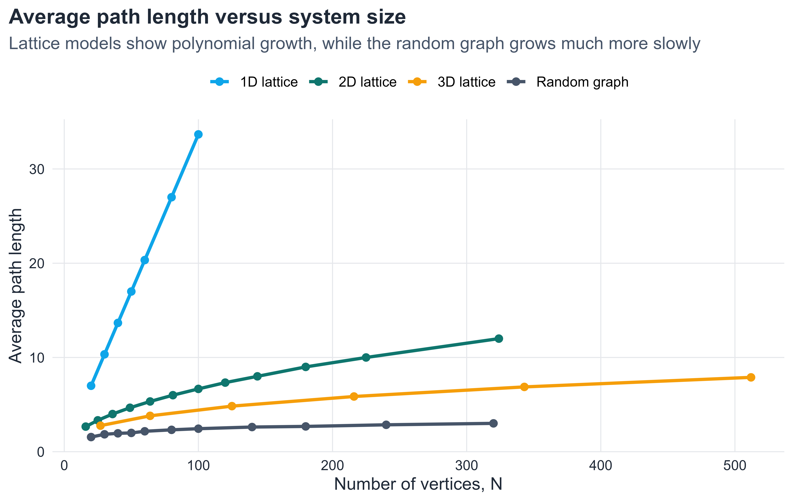
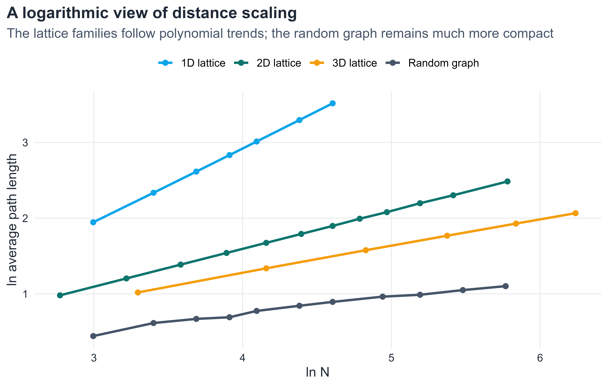
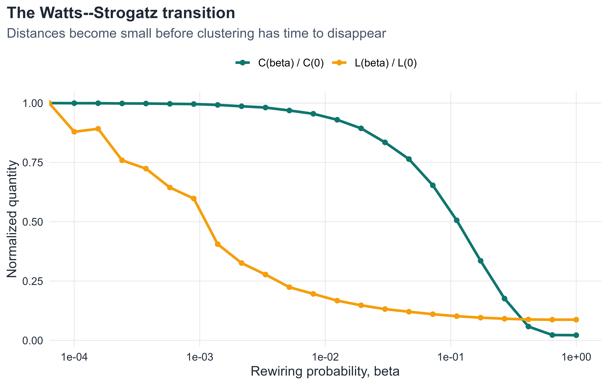
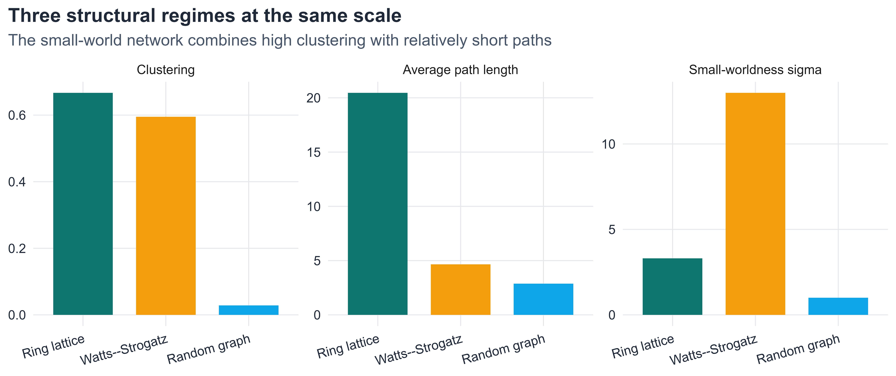

Short Paths, High Clustering, and the Watts–Strogatz Model
6.1 Introduction
The small-world phenomenon is one of the central ideas of modern network science. In everyday language it appears in phrases such as six degrees of separation: even in a very large social system, two people may be connected by only a short chain of acquaintances (Milgram 1967; Watts and Strogatz 1998). The mathematical content of the idea, however, is broader and more precise than the slogan itself.
The real question is not whether the number is exactly six. The important structural observation is that in many large networks the typical distance between vertices is surprisingly small. This raises an immediate benchmark question: small relative to what? The answer only becomes clear when we compare different classes of graphs.
Random graphs typically have short path lengths, often growing roughly logarithmically with network size (Newman 2010; Strogatz 2001). Regular lattices, by contrast, have strong local order but much larger distances, with polynomial growth in system size. Real networks often combine the most interesting aspects of both worlds: they retain strong local clustering while also exhibiting short global distances (Watts and Strogatz 1998; Strogatz 2001).
This chapter follows that logical progression. We first define the basic metric quantities, then explain why random graphs naturally produce short paths, then show why that result is surprising from the perspective of lattice geometry, and finally introduce the Watts–Strogatz model as a mechanism that combines short paths with high clustering. The goal is not only to define a small-world network, but to understand why the phenomenon is mathematically nontrivial and structurally important.
6.2 Chapter roadmap
This chapter develops in the following order:
metric quantities: distance, diameter, average path length, and clustering
logarithmic distance scaling in random graphs
the contrast with regular lattices
the Watts–Strogatz construction and the role of shortcuts
numerical identification of the small-world regime
the strengths and limitations of the model
6.3 Learning goals
By the end of this chapter, it should be possible to:
define graph distance, diameter, average path length, and clustering coefficient precisely
explain the small-world property in mathematical terms
derive the logarithmic distance estimate for random-like networks
explain why the small-world effect is surprising relative to lattice geometry
define the Watts–Strogatz model and interpret its parameters
explain why shortcuts reduce distances much faster than they reduce clustering
identify the small-world regime numerically in R
discuss what the Watts–Strogatz model explains well and what it does not explain
6.4 Distance, diameter, average path length, and clustering
Distance
Definition 6.1 Let G=(V,E) be a connected undirected graph. For vertices u,v \in V, the distance between u and v, denoted by
d(u,v),
is the length of a shortest path from u to v.
Distance is the basic metric quantity in a graph. It counts the minimum number of edges that must be traversed to move from one vertex to another. If two vertices are adjacent, then their distance is 1; if they share a common neighbor but are not adjacent, then their distance is 2.
Diameter
Definition 6.2 Let G=(V,E) be a connected graph. The diameter of G is
D(G)=\max_{u,v \in V} d(u,v).
The diameter measures the largest distance between any pair of vertices. It is therefore a notion of the graph’s maximum metric extent. Because it depends on extreme pairs, it can be sensitive to rare structural features.
Average path length
Definition 6.3 Let G=(V,E) be a connected graph with N=|V| vertices. The average path length of G is
L(G)=\frac{1}{N(N-1)}\sum_{\substack{u,v \in V \\ u \neq v}} d(u,v).
This quantity measures the typical separation between two vertices. In practice it is often more informative than the diameter because it describes typical rather than extreme reachability.
Why average path length is usually more stable
The distinction between diameter and average path length is important.
The diameter is controlled by a small number of extreme paths.
The average path length is computed over all ordered vertex pairs.
For this reason, average path length is usually much more stable in both theory and simulation. In this chapter, it will be our main distance observable.
Clustering coefficient
Definition 6.4 Let G=(V,E) be an undirected graph. The average clustering coefficient of G is
\bar{C}(G)=\frac{1}{N}\sum_{i=1}^{N} C_i,
where C_i denotes the local clustering coefficient of vertex i.
Clustering is a local measure. It asks whether neighbors of a vertex also tend to be connected to one another, thereby closing triangles. The central question of the chapter is whether a network can have, at the same time,
A first explanation of small distances comes from a branching approximation. The logic is rough but powerful.
A branching approximation
Suppose a network has average degree \langle k \rangle and that local neighborhoods are approximately tree-like. Starting from one vertex, one expects roughly:
about \langle k \rangle vertices at distance 1
about \langle k \rangle^2 vertices at distance 2
about \langle k \rangle^3 vertices at distance 3
and in general about \langle k \rangle^d vertices at distance d
This argument ignores neighborhood overlap, loops, and degree fluctuations, so it is not exact. But it captures the main mechanism: when the number of reachable vertices grows exponentially with distance, only a small number of steps is needed to cover a large network (Newman 2010).
Number of vertices within distance d
Under the same approximation,
N(d)
\approx
1+\langle k \rangle+\langle k \rangle^2+\cdots+\langle k \rangle^d.
This is a geometric series, so
N(d)
\approx
\frac{\langle k \rangle^{d+1}-1}{\langle k \rangle-1}.
When \langle k \rangle > 1, the number of reachable vertices expands very quickly with distance.
Logarithmic estimate for distance
Since N(d) cannot exceed the total number of vertices N, the largest relevant distance scale satisfies approximately
N(d_{\max}) \approx N.
For large N, the final term dominates the geometric sum, giving the simplified relation
\langle k \rangle^{d_{\max}} \approx N.
Taking logarithms yields
d_{\max} \approx \frac{\ln N}{\ln \langle k \rangle}.
This is the first mathematical form of the small-world phenomenon. In many random-like networks, the average path length obeys a comparable logarithmic law (Newman 2010; Strogatz 2001).
NoteKey idea
When neighborhoods grow approximately exponentially with distance, metric distances grow only logarithmically with system size.
A rough social-network illustration
Take very rough values
N \approx 7\times 10^9,
\qquad
\langle k \rangle \approx 10^3.
Then
\frac{\ln(7\times 10^9)}{\ln(10^3)} \approx 3.28.
The exact number is not the point. The point is the growth law: logarithmic scaling makes it plausible that a huge system may still have surprisingly short paths.
6.6 Why this is surprising: the lattice benchmark
The phrase small world only becomes mathematically interesting when we compare random-like logarithmic scaling with the slower growth of regular lattices.
Distance scaling in regular lattices
In a one-dimensional lattice,
L(G)\sim D(G)\sim N.
In a two-dimensional square lattice,
L(G)\sim D(G)\sim N^{1/2}.
In a three-dimensional cubic lattice,
L(G)\sim D(G)\sim N^{1/3}.
More generally, in a d-dimensional regular lattice,
L(G)\sim D(G)\sim N^{1/d}.
These are polynomial growth laws, not logarithmic ones.
Why the contrast matters
If a large system were organized like a low-dimensional lattice, distances would grow much faster than in a random graph. The small-world effect is therefore not merely the fact that distances are finite. It is the much stronger statement that they are dramatically smaller than what geometric lattice intuition would suggest (Watts and Strogatz 1998; Strogatz 2001).
6.7 Simulation: scaling of average path length
The following simulation compares the growth of average path length across four model families:
a one-dimensional lattice
a two-dimensional lattice
a three-dimensional lattice
a connected Erdős–Rényi random graph with expected degree about 8
The goal is not to force all families to use exactly the same values of N. The goal is to reveal the scaling trend clearly.
ggplot(distance_scaling_tbl, aes(x = N, y = avg_distance, color = model)) +geom_line(linewidth =1.15) +geom_point(size =2.2) +scale_color_manual(values =c("1D lattice"= course_cols$blue,"2D lattice"= course_cols$teal,"3D lattice"= course_cols$gold,"Random graph"= course_cols$slate ) ) +labs(title ="Average path length versus system size",subtitle ="Lattice models show polynomial growth, while the random graph grows much more slowly",x ="Number of vertices, N",y ="Average path length",color =NULL )

Figure 6.1: Average path length as a function of system size for one-, two-, and three-dimensional lattices and for connected random graphs.
As shown in Figure 6.1, the one-dimensional lattice grows fastest, the two-dimensional and three-dimensional lattices grow more slowly, and the random graph grows far more slowly still. Even on a linear scale, the contrast is already visible.
Show code
ggplot(distance_scaling_tbl, aes(x = logN, y = logd, color = model)) +geom_line(linewidth =1.1) +geom_point(size =2.0) +scale_color_manual(values =c("1D lattice"= course_cols$blue,"2D lattice"= course_cols$teal,"3D lattice"= course_cols$gold,"Random graph"= course_cols$slate ) ) +labs(title ="A logarithmic view of distance scaling",subtitle ="The lattice families follow polynomial trends; the random graph remains much more compact",x ="ln N",y ="ln average path length",color =NULL )

Figure 6.2: The same simulation displayed on logarithmic axes. The lattice curves are consistent with polynomial growth, while the random graph is consistent with much slower, near-logarithmic growth.
Figure Figure 6.2 makes the growth laws easier to read. The lattice families align with the expected polynomial scaling, while the random graph remains far below them. This is the structural meaning of the small-world effect: large networks can remain metrically compact when even a modest amount of randomness is present.
6.8 The Watts–Strogatz model
The previous section explains why short distances can arise in random-like networks, but it does not explain how a network can keep high clustering at the same time. That is the problem addressed by the Watts–Strogatz model (Watts and Strogatz 1998).
Motivation
Two empirical observations often appear together in real systems:
short average path lengths, and
clustering much higher than in a comparable random graph.
These point in different structural directions.
A regular lattice has strong local order and therefore high clustering, but large path lengths.
A random graph has short path lengths, but typically much lower clustering.
The Watts–Strogatz model interpolates between these two extremes. It shows that a graph can maintain local order while acquiring short global distances after only a small amount of random rewiring (Watts and Strogatz 1998; Strogatz 2001).
Parameters of the model
The standard parameters are:
N: number of vertices
K: degree of each vertex in the initial ring lattice, assumed even
\beta \in [0,1]: rewiring probability
The useful regime is
2 \le K < N,
\qquad K \text{ even},
and in asymptotic discussions one often assumes
N \gg K \gg \ln N \gg 1.
Regular ring lattice
Definition 6.5 Let N and K be as above, with K even. The regular ring lattice is the graph on vertex set
V=\{0,1,\dots,N-1\}
in which each vertex is connected to its K/2 nearest neighbors on each side around the ring.
Every vertex has degree exactly K, so the average degree is
\langle k \rangle = K.
This graph is highly ordered and has substantial clustering, but travel across the graph still requires many local steps.
Definition of the Watts–Strogatz model
Definition 6.6 The Watts–Strogatz model with parameters (N,K,\beta) is constructed as follows.
Start from the regular ring lattice on N vertices with degree K.
For each vertex, consider only the K/2 clockwise edges.
Independently, with probability \beta, rewire each such edge to a uniformly chosen new endpoint.
Self-loops and multiple edges are forbidden.
Acting only on the clockwise half of the edges prevents the same undirected edge from being treated twice.
Interpretation of the rewiring probability
The parameter \beta controls the amount of randomness.
If \beta=0, the graph remains a regular lattice.
If 0<\beta\ll1, only a small fraction of edges is rewired, creating a few long-range shortcuts.
If \beta=1, the graph is highly randomized.
Because the number of edges is preserved, the mean degree remains equal to K throughout the interpolation.
Ring-lattice benchmarks
For the regular ring lattice one has the approximate path-length formula
6.9 Visualizing the transition from order to randomness
The next code block builds a progressive rewiring construction. The purpose is pedagogical: the sequence will look like a genuine evolution from order to randomness while keeping the vertex positions fixed.
Figure 6.3: From regular lattice to random network in the Watts–Strogatz model. The same vertex positions are used throughout. Local edges are shown in teal and rewired shortcut edges in gold.
Figure Figure 6.3 makes the mechanism visually transparent. At \beta=0, every edge is local and the graph is fully ordered. For small positive \beta, only a few edges are rewired, yet those few shortcuts already connect distant parts of the ring. As \beta increases, the graph loses its geometric appearance and becomes progressively more random.
Why shortcuts are so effective
A shortcut has a disproportionate effect on path length. In a ring lattice, moving from one side of the graph to another requires many local steps. A single long-range edge can bypass a large part of that travel.
Clustering behaves differently. If only a small fraction of edges is rewired, most local neighborhoods still resemble the original lattice, so clustering changes much more slowly.
ImportantCore asymmetry of the Watts–Strogatz model
A small amount of random rewiring has a much stronger effect on path length than on clustering.
Path length drops sharply because shortcuts bypass long lattice segments.
Clustering decreases slowly because most local neighborhoods remain lattice-like.
A small-world regime is characterized by a substantial drop in normalized path length while normalized clustering remains comparatively high.
Show code
sample_connected_ws_K <-function(size, K, beta, max_iter =100) {stopifnot(K %%2==0)for (i inseq_len(max_iter)) { g <- igraph::sample_smallworld(dim =1, size = size, nei = K /2, p = beta)if (igraph::components(g)$no ==1) return(g) }stop("Could not generate a connected Watts-Strogatz graph.")}
ggplot(ws_summary_long, aes(x = beta, y = value, color = quantity)) +geom_line(linewidth =1.2) +geom_point(size =1.8) +scale_x_log10() +scale_color_manual(values =c("C(beta) / C(0)"= course_cols$teal,"L(beta) / L(0)"= course_cols$gold ) ) +labs(title ="The Watts--Strogatz transition",subtitle ="Distances become small before clustering has time to disappear",x ="Rewiring probability, beta",y ="Normalized quantity",color =NULL )

Figure 6.4: Normalized average path length and normalized clustering coefficient in the Watts–Strogatz model. Path length drops quickly while clustering remains high over a broader range of rewiring probabilities.
Figure Figure 6.4 contains the main quantitative message of the model. The normalized average path length falls sharply even when \beta is still very small, whereas the normalized clustering coefficient decreases much more slowly. There is therefore a range of rewiring probabilities for which the network already has short path lengths but still retains strong local clustering. That interval is the small-world regime.
Definition 6.7 In the Watts–Strogatz model, the small-world regime is the range of rewiring probabilities \beta for which
the average path length is substantially smaller than in the regular lattice, and
the clustering coefficient remains substantially larger than in a comparable random graph.
6.11 Quantifying small-worldness
The phrase small-world is often used qualitatively, but one can also build a simple numerical index. A common choice compares the observed graph with a random graph having similar size and average degree (Humphries and Gurney 2008; Telesford et al. 2011).
Let C and L denote the clustering coefficient and average path length of the observed graph, and let C_{\mathrm{rand}} and L_{\mathrm{rand}} denote the corresponding quantities for a comparable random graph. One widely used index is
comparison_long <- comparison_tbl |> tidyr::pivot_longer(cols =c(clustering, avg_distance, sigma),names_to ="measure",values_to ="value" ) |> dplyr::mutate(measure =factor(measure, levels =c("clustering", "avg_distance", "sigma"),labels =c("Clustering", "Average path length", "Small-worldness sigma")) )ggplot(comparison_long, aes(x = model, y = value, fill = model)) +geom_col(width =0.72, show.legend =FALSE) +facet_wrap(~ measure, scales ="free_y") +scale_fill_manual(values =c("Ring lattice"= course_cols$teal,"Watts--Strogatz"= course_cols$gold,"Random graph"= course_cols$blue )) +labs(title ="Three structural regimes at the same scale",subtitle ="The small-world network combines high clustering with relatively short paths",x =NULL,y =NULL ) +theme(axis.text.x =element_text(angle =15, hjust =1))

Figure 6.5: Comparison of clustering coefficient, average path length, and small-worldness index for a ring lattice, a Watts–Strogatz network, and a random graph of comparable size and average degree.
Figure Figure 6.5 summarizes the chapter’s structural comparison. The ring lattice has high clustering but also large distances. The random graph has short distances but weak clustering. The Watts–Strogatz network occupies the intermediate regime that matters most: its clustering remains much higher than random, while its path length has already moved much closer to the random benchmark. That is exactly the structural sense in which it is a small-world network.
TipStructural comparison
Model
Average path length
Clustering coefficient
Regular lattice
large (\sim N/2K)
high (\sim 3/4)
Random graph (G(N,p))
small (\sim \ln N / \ln \langle k\rangle)
low (\sim p)
Watts–Strogatz (small-world)
small
high
Only the small-world model combines both properties.
The table above highlights the central trade-off of the chapter. A regular lattice preserves local neighborhood structure, so triangles remain common, but long-range communication is inefficient. A random graph greatly improves reachability, yet it does so by sacrificing most of the local order. The Watts–Strogatz model occupies the narrow but important intermediate regime in which a small number of shortcuts lowers path length dramatically while much of the original clustering survives. For teaching purposes, this is the key structural message to keep in mind: small-world behavior is not pure randomness, but a controlled balance between local order and global efficiency (Watts and Strogatz 1998; Strogatz 2001).
6.12 What the Watts–Strogatz model explains and what it does not
The Watts–Strogatz model successfully explains one important empirical coexistence:
high clustering, and
short average path lengths.
This is a major achievement. But the model does not explain all structural properties observed in real networks.
Its degree distribution remains relatively narrow. Because rewiring preserves the number of edges and introduces only limited degree heterogeneity, the model does not naturally generate hubs or heavy-tailed degree distributions. Nor does it naturally reproduce the degree-dependent clustering patterns often seen in hierarchical or scale-free networks (Albert and Barabási 2002; Barabási and Pósfai 2016).
Therefore, the model captures one key aspect of real systems, but not the full range of structural signatures found in empirical data.
6.13 Applications of small-world networks
The small-world idea matters because many real systems balance local organization with global reachability.
Social systems
In social networks, high clustering reflects the tendency of acquaintances of the same person to know one another. At the same time, short path lengths support rapid information flow, rumor spreading, and social search (Milgram 1967; Watts and Strogatz 1998).
Neural systems
In brain and neural networks, strong local clustering is associated with local specialization, while short path lengths support efficient long-range communication. The result is often interpreted as a compromise between segregation and integration (Strogatz 2001).
Technological and infrastructure systems
Transportation and communication networks require efficient long-range reachability without eliminating regional organization. Shortcut-like connections can reduce travel or transmission time significantly while preserving local substructure.
Why these applications matter
The practical importance of small-world structure comes from a trade-off:
purely local systems are organized but globally slow,
purely random systems are globally efficient but locally weak,
small-world systems combine much of the benefit of both.
6.14 Bridge to the next chapter
The Watts–Strogatz model explains how short paths and high clustering can coexist, but it does not explain another major empirical feature of many real systems: the presence of hubs and strongly heterogeneous degree distributions. In the model, most vertices still have similar degree, even after rewiring. For that reason, the small-world chapter naturally leads to a new question: how can networks produce a few highly connected vertices together with many low-degree ones? That question takes us to the theory of scale-free networks, where the main focus shifts from shortcuts and clustering to heterogeneity, power laws, and growth mechanisms (Albert and Barabási 2002; Barabási and Pósfai 2016).
6.15 Core formulas to remember
ImportantSummary
For small-world networks and the Watts–Strogatz model:
Random-network distance estimate:
L(G) \approx \frac{\ln N}{\ln \langle k \rangle}
What does “small” mean mathematically in the phrase small world?
Why is the estimate \ln N / \ln \langle k \rangle associated with random-like networks?
Why is the small-world effect surprising from the viewpoint of lattice geometry?
Why do shortcuts affect path length more strongly than clustering?
Why is the Watts–Strogatz model structurally different from an Erdős–Rényi random graph?
Why is average path length usually more stable than diameter?
What does the Watts–Strogatz model explain successfully, and what does it fail to explain?
What is the purpose of the small-worldness index \sigma?
6.17 End-of-chapter exercises
The exercises are divided into three groups:
mathematical exercises,
conceptual and analytical exercises,
simulation and coding exercises.
Part I. Mathematical exercises
Exercise 1. Geometric-series derivation
Starting from the branching approximation
N(d)\approx 1+\langle k \rangle+\langle k \rangle^2+\cdots+\langle k \rangle^d,
derive the closed-form expression
N(d)\approx \frac{\langle k \rangle^{d+1}-1}{\langle k \rangle-1}.
State clearly the assumption under which this approximation is meaningful.
Exercise 2. Logarithmic distance estimate
Starting from
N(d_{\max})\approx N,
derive the estimate
d_{\max}\approx \frac{\ln N}{\ln \langle k \rangle}.
Explain each algebraic step carefully.
Exercise 3. Why the estimate is not exact
The relation
L(G)\approx \frac{\ln N}{\ln \langle k \rangle}
is only an approximation. Explain why it is not exact. Your answer should discuss:
overlap between neighborhoods,
loops and finite-size effects,
the difference between average distance and diameter.
Exercise 4. Lattice scaling laws
Show that in a d-dimensional regular lattice with N vertices, the characteristic linear size is of order
N^{1/d}.
Explain why this leads to the scaling
L(G)\sim D(G)\sim N^{1/d}.
Exercise 5. Average degree in the ring lattice
Let G be the regular ring lattice with parameters (N,K).
Prove that every vertex has degree K.
Deduce that
|E|=\frac{NK}{2}.
Compute the average degree.
Exercise 6. Normalized observables
Let C(\beta) and L(\beta) be the clustering coefficient and average path length in the Watts–Strogatz model.
Define the normalized quantities
\frac{C(\beta)}{C(0)},
\qquad
\frac{L(\beta)}{L(0)}.
Explain why these ratios are useful when studying the transition from order to randomness.
State the behavior expected in the small-world regime.
Exercise 7. Ring-lattice path length
Give a heuristic derivation of the estimate
L_{\text{lattice}} \approx \frac{N}{2K}
for the regular ring lattice.
Exercise 8. Ring-lattice clustering
Using the ring lattice with parameter K, derive the formula
C(0)=\frac{3(K-2)}{4(K-1)}.
Part II. Conceptual and analytical exercises
Exercise 9. Six degrees and logarithmic scaling
Explain why the statement “all vertices are separated by only a few steps” should not be interpreted as a fixed constant independent of system size. Your answer should distinguish carefully between a constant bound and logarithmic growth.
Exercise 10. Why small worlds are surprising
Write a short mathematical discussion comparing the growth laws
\ln N, \qquad N^{1/3}, \qquad N^{1/2}, \qquad N.
Explain why the logarithmic law is fundamentally different from polynomial lattice scaling.
Exercise 11. Random graph versus small-world network
A random graph and a Watts–Strogatz network can both have short average path lengths. Explain why they should still be considered structurally different models. Your answer should address clustering, local order, and global reachability.
Exercise 12. Why shortcuts are powerful
Explain why a small number of long-range edges can drastically reduce average path length. Use the language of graph distance and distinguish between local and long-range edges.
Exercise 13. Limitations of the Watts–Strogatz model
Discuss why the Watts–Strogatz model does not naturally explain hub-dominated degree distributions or strong degree-dependent clustering.
Exercise 14. Interpreting the small-worldness index
Explain what it means if a graph has \sigma > 1. Why is it not enough to examine clustering alone?
Part III. Simulation and coding exercises
Exercise 15. Distance scaling in random networks
For several values of N and fixed average degree, simulate random graphs and estimate the average path length. Compare the empirical results with the prediction
L(G)\approx \frac{\ln N}{\ln \langle k \rangle}.
Exercise 16. Visualizing the Watts–Strogatz interpolation
Produce your own sequence of Watts–Strogatz graphs for several values of \beta. Use a fixed circular layout so that the effect of rewiring can be seen clearly.
Exercise 17. Detecting the small-world regime numerically
Simulate the Watts–Strogatz model for a grid of rewiring probabilities. Plot both
on the same graph, and identify the regime in which the network is small-world.
Exercise 18. Comparing ring lattice, Watts–Strogatz, and random graph
Construct three graphs of comparable size and average degree: a ring lattice, a Watts–Strogatz graph, and an Erdős–Rényi graph. Compute clustering, average path length, and \sigma for each one. Interpret the results.
6.18 References
Albert, Réka, and Albert-László Barabási. 2002. “Statistical Mechanics of Complex Networks.”Reviews of Modern Physics 74 (1): 47–97. https://doi.org/10.1103/RevModPhys.74.47.
Barabási, Albert-László, and Márton Pósfai. 2016. Network Science. Cambridge University Press.
Humphries, Mark D., and Kevin Gurney. 2008. “Network ’Small-World-Ness’: A Quantitative Method for Determining Canonical Network Equivalence.”PLoS ONE 3 (4): e0002051. https://doi.org/10.1371/journal.pone.0002051.
Milgram, Stanley. 1967. “The Small World Problem.”Psychology Today 2 (1): 60–67.
Newman, M. E. J. 2010. Networks: An Introduction. Oxford University Press.
Telesford, Qawi K., Karen E. Joyce, Satoru Hayasaka, Jonathan H. Burdette, and Paul J. Laurienti. 2011. “The Ubiquity of Small-World Networks.”Brain Connectivity 1 (5): 367–75. https://doi.org/10.1089/brain.2011.0038.
Watts, Duncan J., and Steven H. Strogatz. 1998. “Collective Dynamics of ’Small-World’ Networks.”Nature 393 (6684): 440–42. https://doi.org/10.1038/30918.
Social systems
In social networks, high clustering reflects the tendency of acquaintances of the same person to know one another. At the same time, short path lengths support rapid information flow, rumor spreading, and social search (Milgram 1967; Watts and Strogatz 1998).